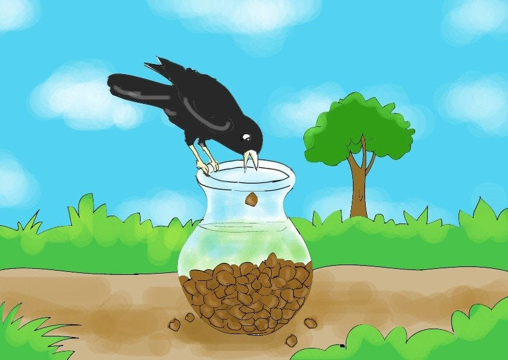

One hot day, a thirsty crow was looking for some water to drink. After searching and searching, the crow finally found a pot with some water in it. The crow was delighted. But when he put its beak into the pot, he couldn't reach the water.
There was only a little bit of water
at the bottom. The crow thought for a while and came up with a brilliant idea.
The Thirsty CrowThe clever crow picked up pebbles and dropped them one
by one into the pot. The water inside the pot began to rise and rise
until finally, he could drink the water. The crow drank the water and
flew away happily.
Hello HeyHey
TAKE ME TO GOOGLE